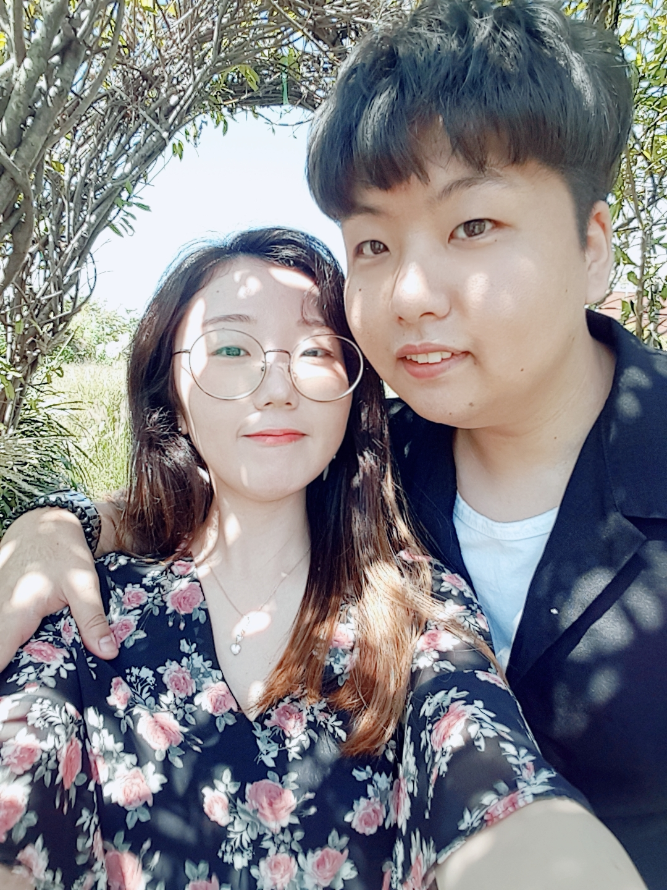

사랑은 우리가 처음 만났을 때부터 지금까지
서로의 마음을 확인해 나가는 일련의 과정을 모두 일컷는 말이라고 생각해요.
언제나 오빠가 제게 하는 말이 있죠. "사랑은 혼자서 하는게 아니라 둘이서 하는거라고." 맞아요.
우리가 같이 있는 현재도, 그리고 함께 맞이할 미래에도 우리는 둘이서 열렬히 사랑할 것
이라고 믿어 의심치 않아요.
근데요, 상대방에게 전해지지 못했다 뿐이지, 혼자서 그 사람을 떠올리며 행복했을 마음도
'사랑' 이라고 생각해요.
쭈뼛쭈뼛 크리스마스에 같이 시간보내자고 물어봤던 일, 밤새워 일해 피곤할텐데도 항상 즐겁게
이야기를 나눴던 아침의 시간,
좋아한다는 진심이 예상치 못한 순간에 튀어나와 버린 귀여운 고백,
제게는 오빠가 보여줬던 모습 중에 어느 것 하나 사랑이 아닌 것이 없어서,
비록 그 마음들이 과거에는 닿지 못했더라도 앞으로는 꼭 기억해주고 싶어요.

제가 오빠의 사랑을 기억해주는 것처럼, 오빠도 제 마음을 소중히
여겨주실거죠? ㅎㅎ 완벽하네요. 역시 우리는 천생연분이에요!
세상에 다시는 없을 만큼 사랑해요.
'어떤 사람이나 존재를 몹시 아끼고 귀중히 여기는 마음. 또는 그런 일.'이라는 말처럼
사랑할게요.
사랑해요, 태현 오빠
[P.S 밑의 글은 이거 맨 처음 만들었을 때 쓴 글이가 아까워서 남겨뒀어요.]
아니 근데 이거 너무나 신기하자너
설마 한글로 입력해도
정말 나오는건가 넘나 궁금쓰하네요.
이거 글 나오면 레게노띠!!!!!!!

나는 태현오빠를 정말 정말 좋아해서 생각만해도 입가에서 웃음이 떠나지를 않네 ㅎㅎ
졸리긴 한데,
오빠랑 같이 있던거 떠올리면서 힘내고 있어!
열심히 해서 여보한테 칭찬 많이 많이 받을거니까!
헤헤헤 사랑해!